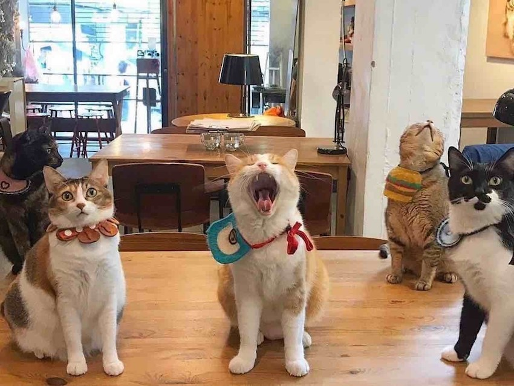

在12歲那年。我遇到了人生第一隻浪浪，也是我最愛的貓。是一隻可愛的三花貓。
祂和所有貓咪都一樣，沒有因為品種的關係，任何地方受到限制。
一樣喜歡逗貓棒，喜歡抓昆蟲，喜歡睡覺。
從那時候起，我就想成為一個可以幫助他們的人。
裡面的每一位成員，都曾是流浪動物。我們的努力，就是為了當他們的避風港。
在這裡販售的餐點及其他商品，都用來資助浪浪們，提供他們一個打工換宿的機會。
我們熱情地收留、照顧和培養流浪貓，為這些需要關懷的生命提供一個安全和舒適的環境。
每一杯精心調製的咖啡，都與可愛的貓咪互動緊密結合，為您的休閒時光帶來獨特的體驗。
店內裝潢與自然元素相結合，營造出一個放鬆、舒適的空間。
使客人可以盡情享受與貓咪的親密互動。
無論您是貓奴還是咖啡愛好者，這家貓咪咖啡廳都將為您提供一個充滿溫暖和愛的獨特體驗。
在這裡，每一杯咖啡都不僅是口感的享受，更是對流浪貓愛與關懷的實踐。
